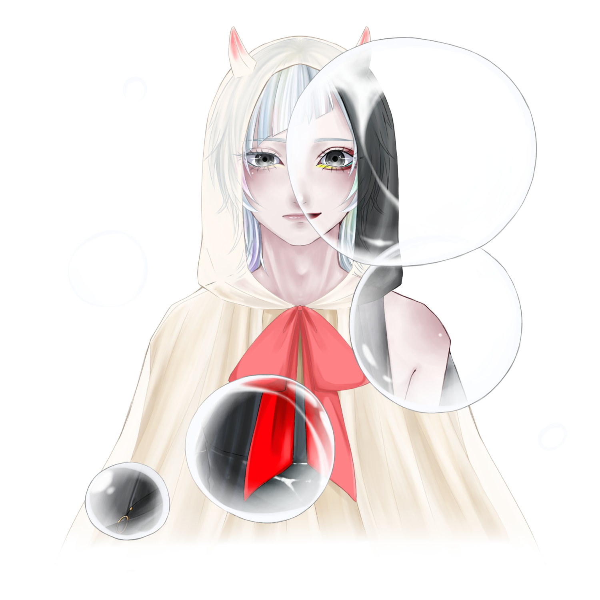

多段階(f3.f4.f5)の連続音です。
標準音源セットに比べ高音域を滑らかに歌うことができます。 Readmeを一読の上ご利用ください。
視聴はこちら⬇︎(ust：有魚神弥/番煎P 様)
標準音源セットに比べ高音域を滑らかに歌うことができます。 Readmeを一読の上ご利用ください。
視聴はこちら⬇︎(ust：有魚神弥/番煎P 様)

単音階(f4)の連続音です。
雷雪が強音源、慈雨が弱音源にあたり、それぞれ叫ぶように、囁くように歌うことができます。 Readmeを一読の上ご利用ください。
雷雪/視聴はこちら⬇︎(ust：有魚神弥/番煎P 様)
慈雨/視聴はこちら⬇︎(ust：有魚神弥/番煎P 様)
雷雪が強音源、慈雨が弱音源にあたり、それぞれ叫ぶように、囁くように歌うことができます。 Readmeを一読の上ご利用ください。
雷雪/視聴はこちら⬇︎(ust：有魚神弥/番煎P 様)
慈雨/視聴はこちら⬇︎(ust：有魚神弥/番煎P 様)
利用規約はこちらから